Photography · video · performance
Photo and video projects
A visual practice that runs alongside my research: rooms, objects, bodies, absence and evidence. Older art-portfolio work from 2007–2010 and later photo collections. Open a project to see the full series.
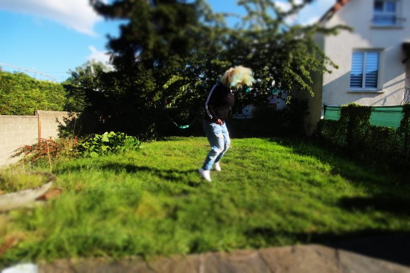
A photo sequence about performance, escape, and awkward freedom.
8 images

A quiet sequence of surfaces, cuts, gestures, and withheld movement.
7 images
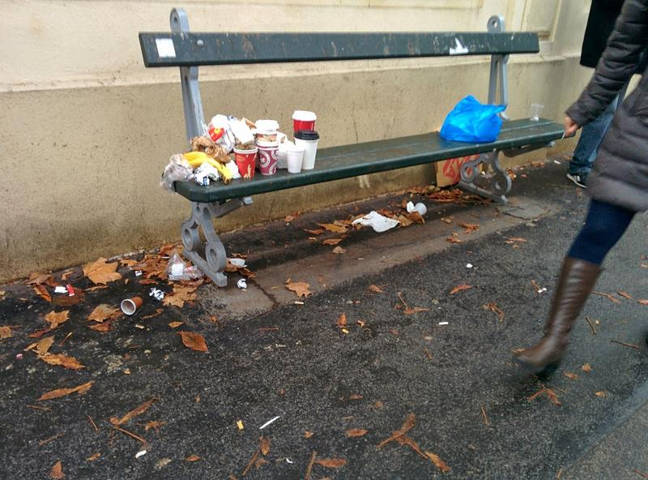
Waiting, street fragments, bodies, and public-space choreography.
6 images
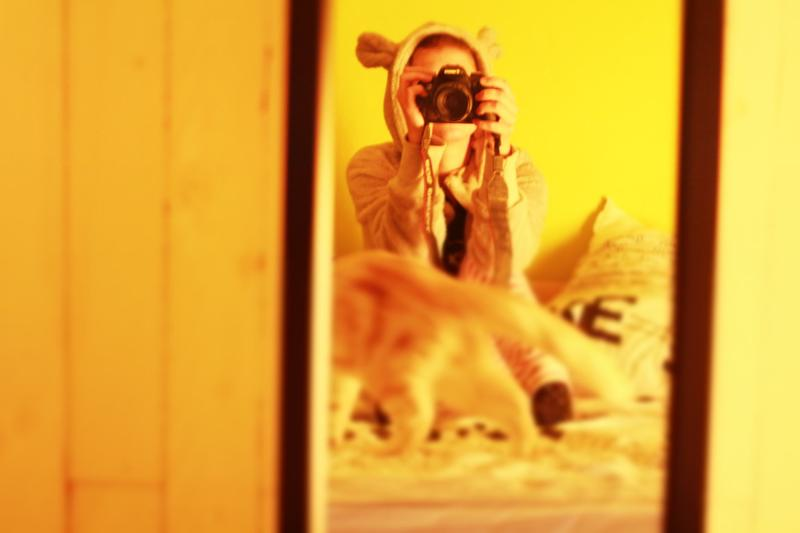
An interior, a colour, light, objects, and a room becoming a scene.
5 images
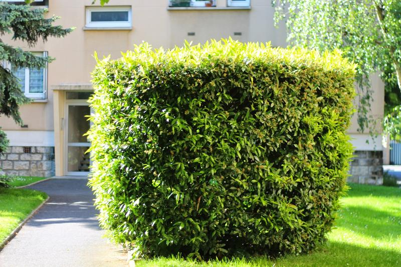
Rooms, objects, absence, and traces of someone not directly shown.
13 images
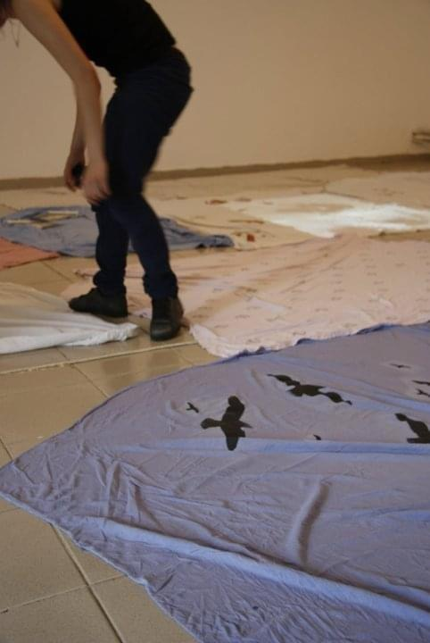
Installation at Galeria apARTe, Iași: bedsheets, pillows, lamps and a projection on the gallery floor.
28 images
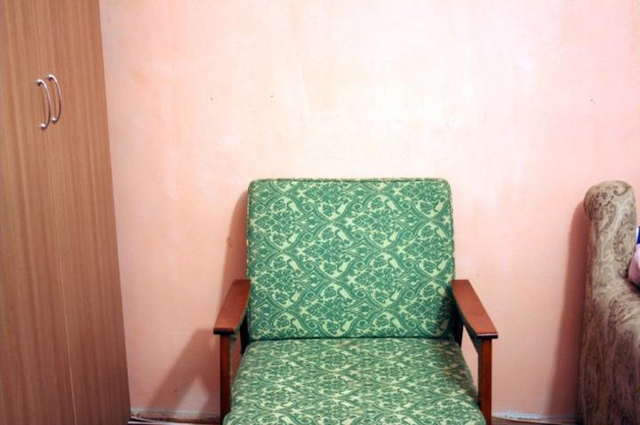
Bachelor’s thesis: an interactive installation about private space and the body.
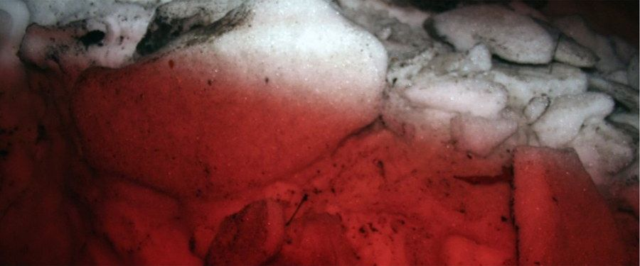
A Christmas at home, with no Christmas in it.
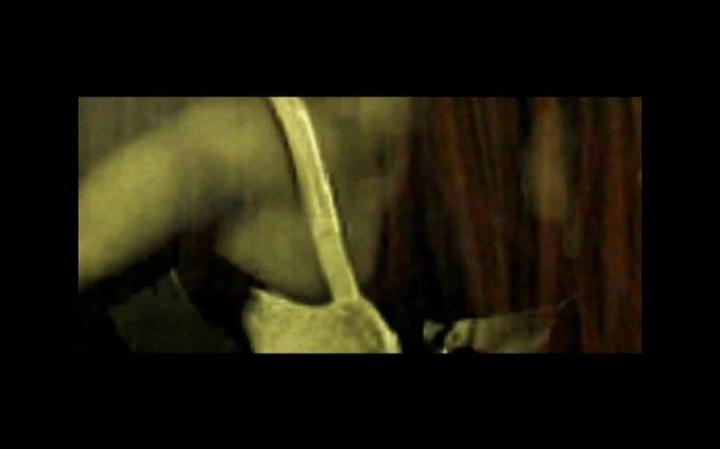
A past imagined before falling asleep.

Call me, and no phone in sight.
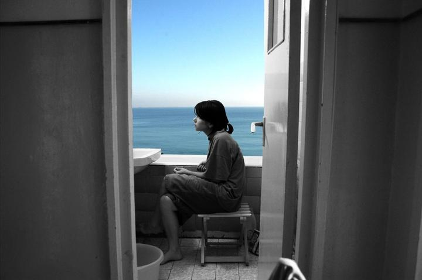
Photography and exhibition views, 2009.
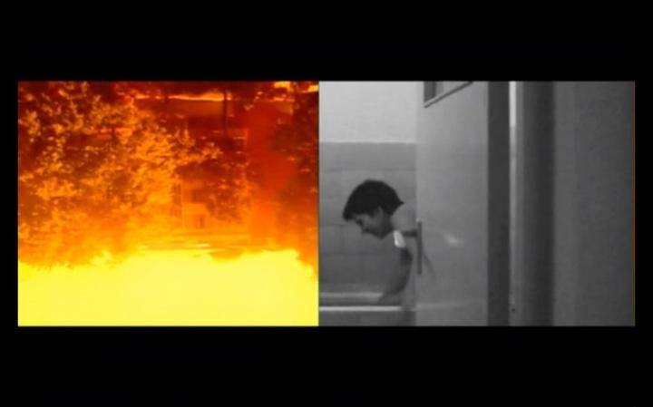
Photography and exhibition views, 2009.
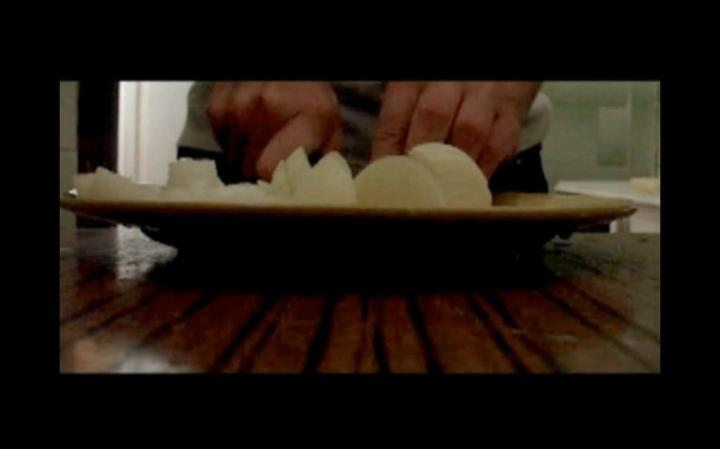
Video stills from the 2009 portfolio.
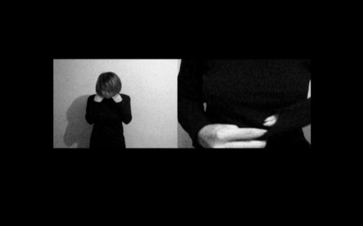
Video project, 2009.
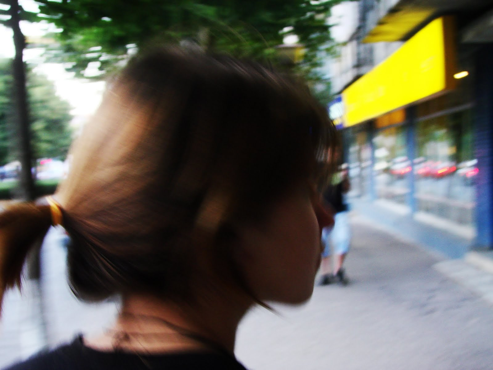
A street sequence photographed from behind.
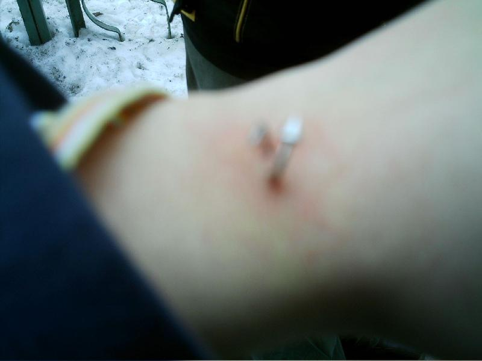
Repeated close-ups of a piercing on a hand.
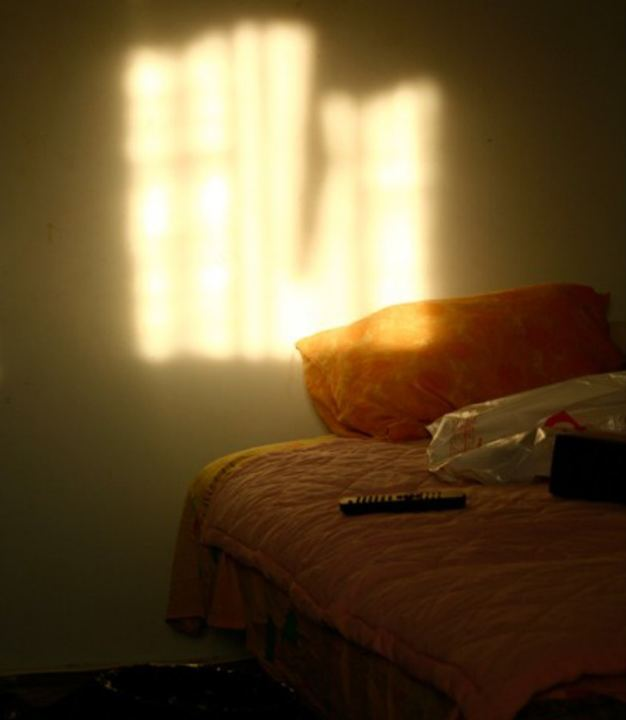
A book of images, text fragments, truthfulness and staring.
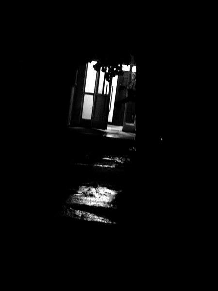
Night streets, a lit doorway, dark rooms.
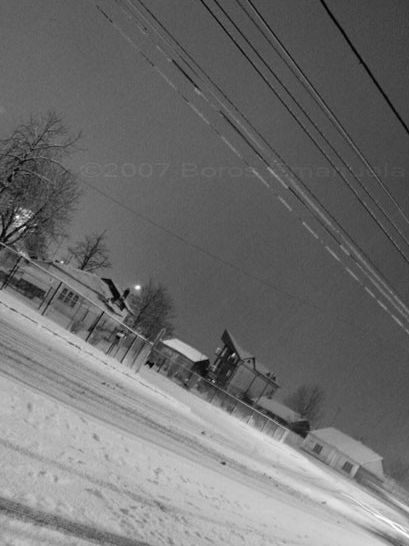
Winter nights, Before and After.